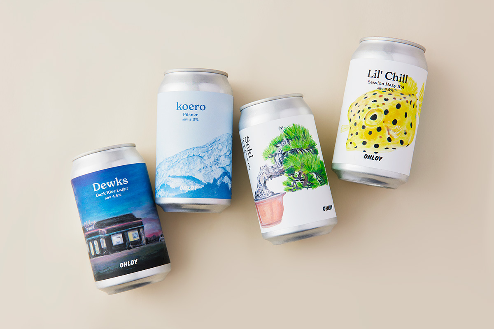
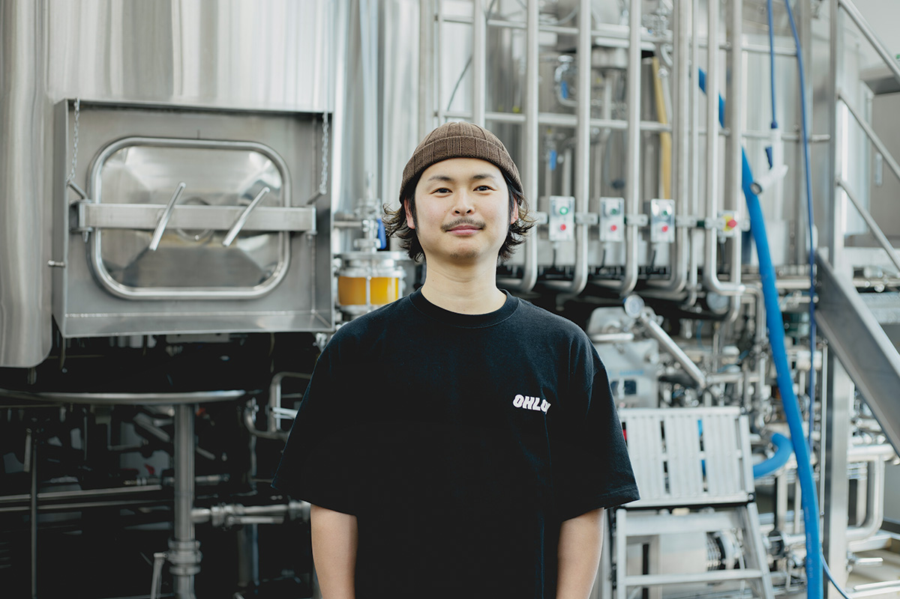
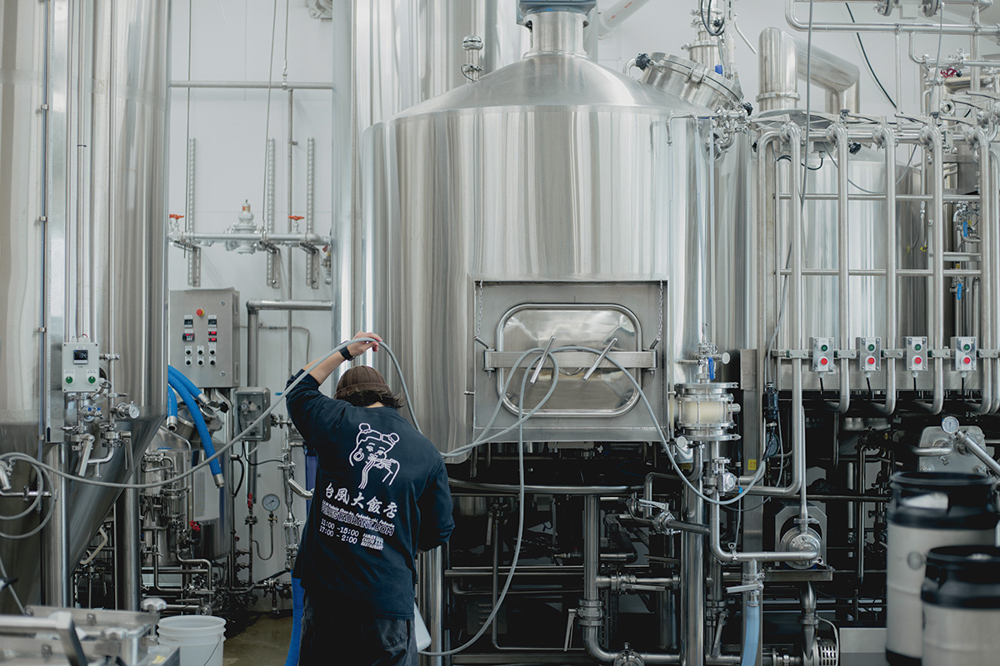
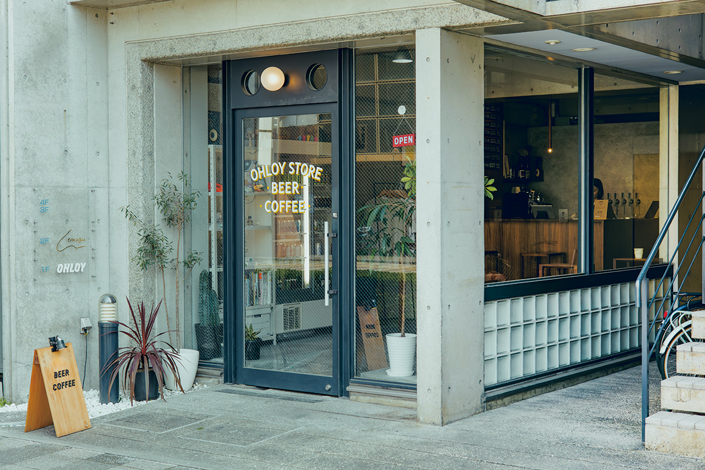
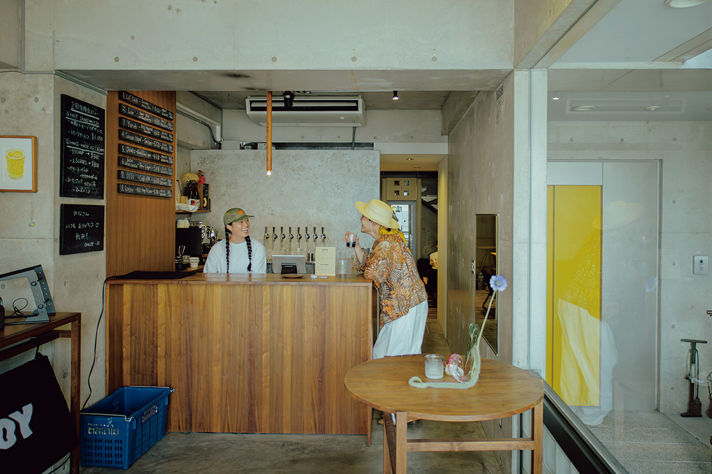
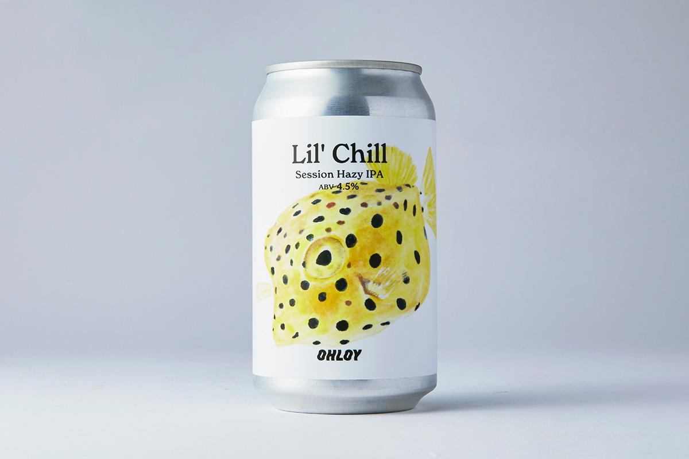
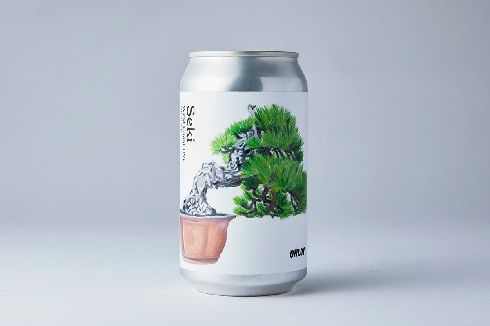
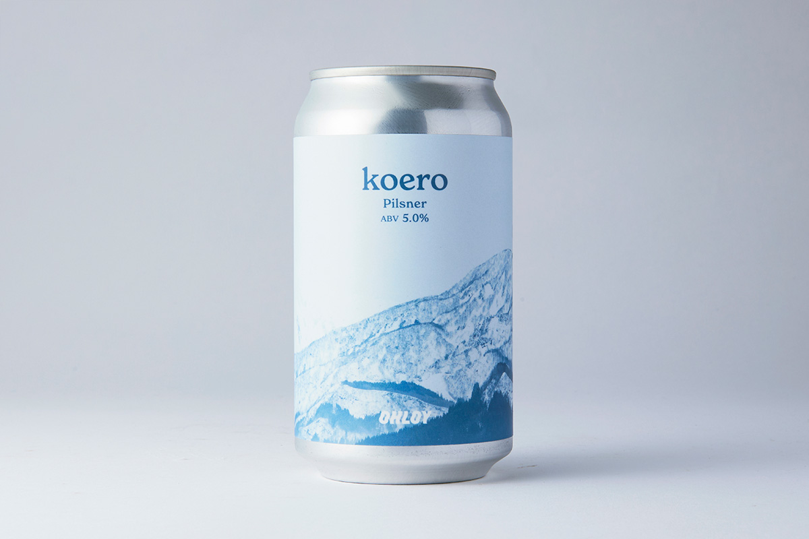
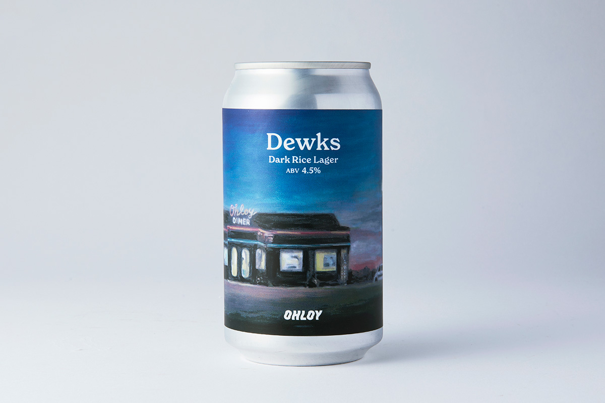

Пивоварня из Такамацу варит пиво на местном рисе и заказывает этикетки у местных художников. Рассказываем, как бывший автомеханик, бариста и обжарщик пришёл к пиву

«OHLOY BREWING» начинала как «фантомная пивоварня»: собственной площадки у команды не было, и варка шла на арендованном оборудовании. Слава расходилась по сарафанному радио, и сегодня это одна из самых заметных крафтовых пивоварен Такамацу. «Теперь всё пойдёт на полной скорости. Мы этого долго ждали», говорит представитель и пивовар Хитоси Ватанабэ. Пивоварня работает четвёртый год и планирует открыть собственный цех в посёлке Мурэ города Такамацу.

Трудовой путь Ватанабэ не похож на траекторию типичного пивовара. Мечтать о ремесле автомеханика он стал ещё в школе, но к двадцати шести годам индустрия начала жить культом постоянной смены машин, и Ватанабэ из неё ушёл. Следующей остановкой стал кофе: работа в «Starbucks Coffee Japan», а затем стажировка по обжарке в США. Именно там, в поездках с друзьями по американским пивоварням, он открыл для себя крафт. «Пивоварни каждой улицы и каждого города варят по-своему: у каждого места свой характер и свой мир. Меня зацепило то, как прочно это пиво укоренено в родной земле, и я подумал, что, возможно, нашёл своё дело», вспоминает Ватанабэ.

Вернувшись в Японию, Ватанабэ руководил запуском обжарочного цеха, ставшего лицом одного из брендов, а потом переступил порог пивоварни. «Оценку зерна, каппинг, я делал каждый день, и в пивоварении это ровно та же процедура. А ещё тем, кто понимает, как устроены машины, войти в цех намного проще. Так навыки автомеханика пригодились неожиданным образом», рассказывает он. Так, без профильного диплома, Ватанабэ получил место кандидата в главные пивовары.

Американский опыт определил и цель: Ватанабэ хочет построить бренд, ради которого молодёжь останется работать в родных местах. Первым шагом станет собственный цех в Мурэ: это место выбрано за природу и красивые пейзажи. «У крафтового пива много стилей, и за каждым стоит своя история. Основу я ломать не стану, но элементы Кагавы и местные ингредиенты вплести в неё намерен», говорит пивовар.

Часть сортов варится на кагавском рисе, а этикетки рисуют кагавские художники и фотографы. Ниже четыре сорта основной линейки с ценами.

«Lil’Chill», Session Hazy IPA, крепость 4,5%. Редкий сорт, который варят всего несколько раз в году. В купаже солод из Германии и Великобритании, овёс и пшеница; во вкусе фруктовая яркость и мягкая хмелевая нота. Хороший спутник для расслабленного отдыха. Банка 350 мл стоит 930 иен. Этикетку с изображением кузовка, пятнистой морской рыбки, нарисовала живущая в Кагаве художница Каэдэ Нисихара.

«Seki», West Coast IPA, крепость 6,5%. Солод из Канады, Великобритании и Германии, хмель. Плотное горьковатое пиво с ароматным долгим послевкусием: подойдёт и к мясным блюдам, и как завершающий бокал вечера. Банка 350 мл стоит 850 иен. На этикетке такамацуский бонсай, снова работа Каэдэ Нисихары.

«koero», NZ Hop Pilsner, крепость 5%. К солоду из Канады и Германии здесь добавлен рис из Кагавы: вкус прозрачный и лёгкий, как талая вода. Банка 350 мл стоит 850 иен. Этикетку доверили такамацускому фотографу Такуми Кондо.

«Dewks», Dark Rice Lager, крепость 4,5%. Тёмный солод из Германии, Канады и Великобритании, рис и хмель. Тёмный солод экстрагируют холодной водой, и в сочетании с варёным рисом пиво получается лёгким, почти как холодный кофе. Банка 350 мл стоит 930 иен. На этикетке неоновая вывеска придорожного дайнера, дизайн Каэдэ Нисихары.